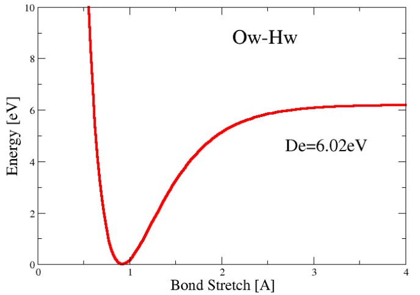
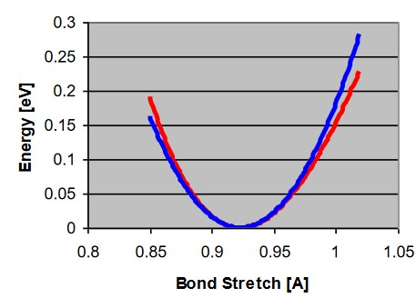
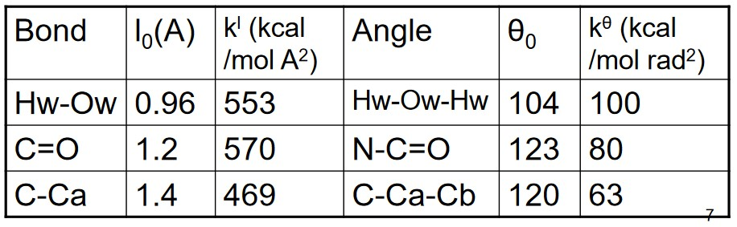
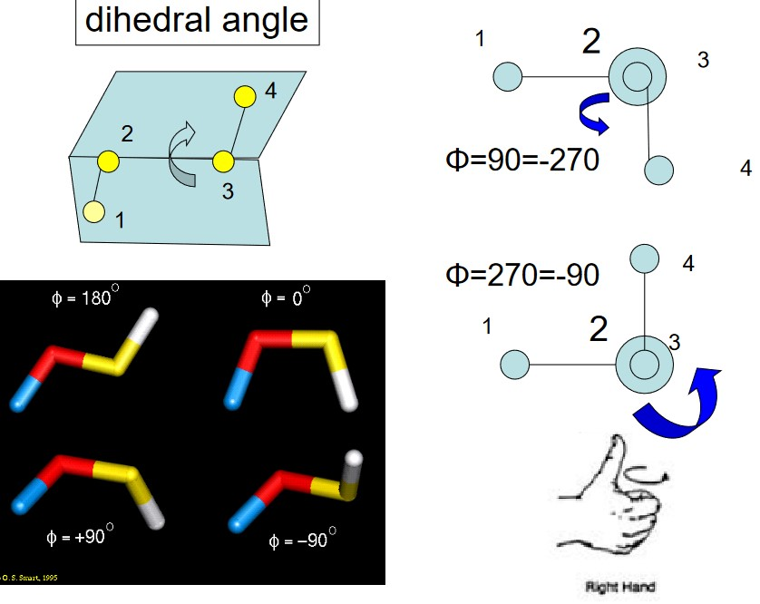
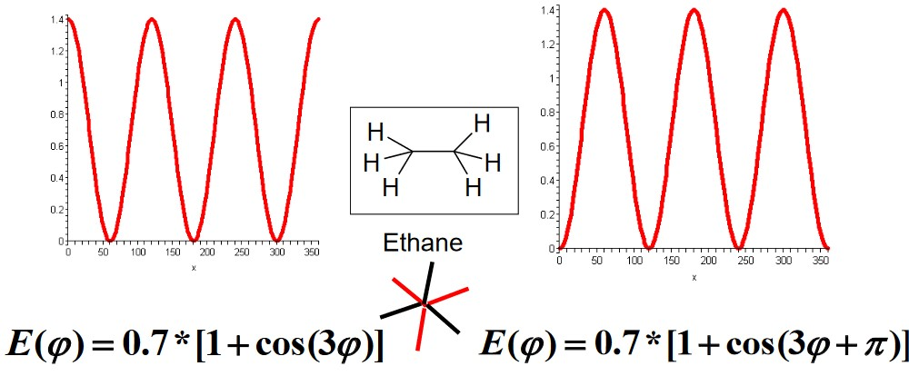
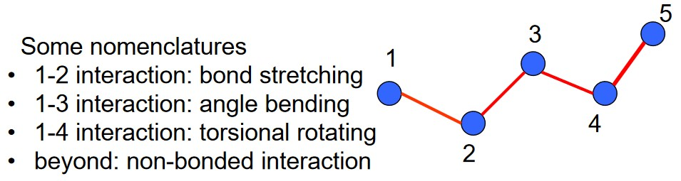
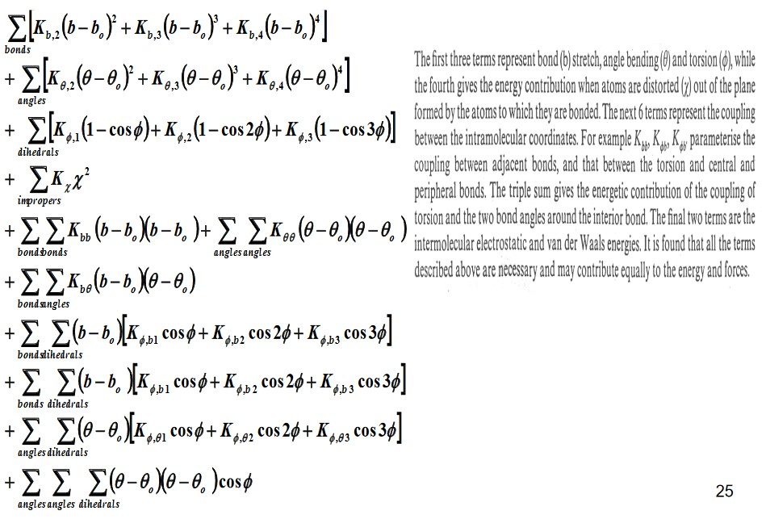

4 Force Fields
A force field implies that a molecule’s atoms are a collection of different matter interacting with one another via forces described by empirical energy functions. This is unlike quantum mechanical calculations: the electrons and atoms’ nuclei are not explicitly included in such calculations.
Force fields provide a fast computational method that works for small and big molecules alike (and even complex molecular systems).
4.1 Typical Force Fields
A typical force field \(U(\{r_{ij}\})\) has the following formula:
\[\begin{align} U(\{r_{ij}\}) = &\sum_j\frac{k^l_j}{2}(l_j - l^0_j)^2 + \sum_j\frac{k^\delta_j}{2}(\delta_j - \delta_j^0)^2 + \sum_{torsions}\frac{V_n}{2}(1 + \cos(n\phi - \gamma)) \\ &+ \sum_{i, j = 1}^N\frac{q_iq_j}{r_{ij}} + \sum_{i, j = 1}^N4\epsilon_{ij}\left[\left(\frac{\sigma_{ij}}{r_{ij}}\right)^{12} - \left(\frac{\sigma_{ij}}{r_{ij}}\right)^6\right] \end{align}\]Or in more layman terms:
\[\begin{align} \text{Force field} = &\text{ bond stretching} + \text{valence angle bending} \\ &+ \text{torsions} + \text{Electrostatic charges} \\ &+ \text{van der Waals forces} \end{align}\]Both bond stretching and valence angle bending refer to intramolecular forces. This is in contrast to electrostatic charges and van der Waals forces: intra- and intermolecular bonding.
4.1.1 Bond Stretching
The Morse potential \(E(l)\) and the Harmonic potential \(a\) are:
\[\begin{align} E(l) &= D_e\{1 - \exp[-a(l - l_0)]\}^2 \\ a &= \omega \sqrt{\frac{\mu}{2D_e}} \end{align}\]\(D_e\) in the above equations represent the depth of the potential energy minimum:
\(\omega\) represents the bond vibration frequency, \(\mu\) the reduced mass, and \(l_0\) the reference bond length1
4.1.1.1 At Room Temperature (i.e., 298 K)
In such a case, the thermal kinetic energy of the system (i.e., molecule) falls within \(\displaystyle \frac{1}{2}k_BT\) and \(300 K\). An approximation for the thermal kinetic energy \(E_{thermal}\) is about 0.3 kcal / mol. We can also say that:
\[\begin{align} E(l) &= \frac{1}{2}k(l - l_0)^2 \\ k &= 2D_ea^2 = \mu\omega^2 \end{align}\]At room temperature, the energy potential of a molecule can be described via the following graph:

This graph is also called a Hooke’s spring.
4.1.2 Angle Bending

Because of a covalent bond’s directionality, its bond angles do not change that much.
\[\begin{equation} E(\theta) = \frac{k}{2}(\theta - \theta_0)^2 \end{equation}\]Therefore, Hooke’s law is often used to calculate the harmonic potential energy of a certain type of bond angle.
4.1.3 Torison Terms

The torsional energy is defined between every quartet of atoms - it depends on the dihedral angle \(\phi\) made by two planes (and also incorporating the first and last three terms in the torsion).
\[\begin{equation} E(\psi) = \sum_{n = 0}^N\frac{V_n}{2}[1 + \cos(n\psi - \psi_0)] \end{equation}\]Torsional motions are typically hundreds of times less stiff than bond stretching motions.
Torsion terms also mimic bonding characteristics and neighboring atoms’ and their side groups’ steric hindrances about the chain axis.
4.1.3.1 Exammple Torsional Terms for Ethane

Note that the y-axis of the above graphic is in kcal / mol.
4.1.4 Non-Bonded Interactions

The kind of bonded interactions depend on the bonding relationship between atoms. Such energy functions in this scenario describe the total interactions between atoms and cannot be further decomposed.
4.1.5 Electrostatic Interactions
This is a group in its own right - the other group of non-bonded terms is van der Waals interactions.
\[\begin{equation} E_{ele} = \sum_{i > j}\frac{1}{4\pi\epsilon_0}\frac{q_iq_j}{r_{ij}} \end{equation}\]In a simple model consisting of two water molecules, their partial charges are \(q_O = -0.834\) and \(q_H = 0.417\).
4.1.5.1 Calculating Partial Charges
A molecule’s electrostatic potential can be measured - it can also be determined from molecular wavefunctions (from quantum mechanics):
\[\begin{equation} R = \sum_{i = 1}^{N_{points}}(\phi_i^{calc} - \phi_i^0)^2 \end{equation}\]The goal is to find a set partial charge from which the calculated potentials are closest to the reference ones.
4.1.6 van der Waals Interactions
They arise from a balance between attractive and repulsive forces.
The attractive force is due to dispersion forces and is equivalent to \(\displaystyle \frac{1}{r^6}\). The repulsive force originates from quantum mechanics and can be understood using Pauli’s exclusion principle.
4.1.6.1 Lennard-Jones Potential
The Lennard-Jones 12-6 function \(\displaystyle 4\epsilon\left[\left(\frac{\sigma}{r}\right)^{12} - \left(\frac{\sigma}{r}\right)^6\right]\) has two adjustable parameters:
- Collision diameter \(\sigma\)
- Well depth \(\sigma\)
The \(\displaystyle \frac{1}{r^{12}}\) is questionable at times, but also allows for rapid computations.
4.1.6.2 Combination Rules
A way to approximate parameters is needed to calculate the van der Waals interactions between different kinds of atoms.
There are two methods covered in BS3008:
Amber and Charmm
\[\begin{align} \epsilon_{ij} &= \sqrt{\epsilon_i\epsilon_j} \\ \sigma_{ij} &= \frac{\sigma_i + \sigma_j}{2} \end{align}\]The Lorentz-Berthelodt rules are used.
OPLS2 Force Fields
\[\begin{align} \epsilon_{ij} &= \sqrt{\epsilon_i\epsilon_j} \\ \sigma_{ij} &= \sqrt{\sigma_i\sigma_j} \end{align}\]
4.1.6.3 Parameters of van der Waals Forces
The Lennard Johnson (i.e., LJ) parameters state the following:
- Heat of vaporization
- Density (i.e., molecular volume)
- Partial Molar Volume
- Crystal simulations
4.2 Common Empirical Force Fields
BS3008 lists several different force fields for one’s own reference:
Class I Force Fields
- CHARMM
- CHARMm
- AMBER
- OPLS / Schrodinger
- ECEPP (i.e., free energy force field)
- GROMOS
Class II Force Field
- CFF95
- MM3
- MMFF94
- UFF, DREIDING
4.2.1 On Class II Force Fields

The above image was taken off professor Mu’s teaching slides.